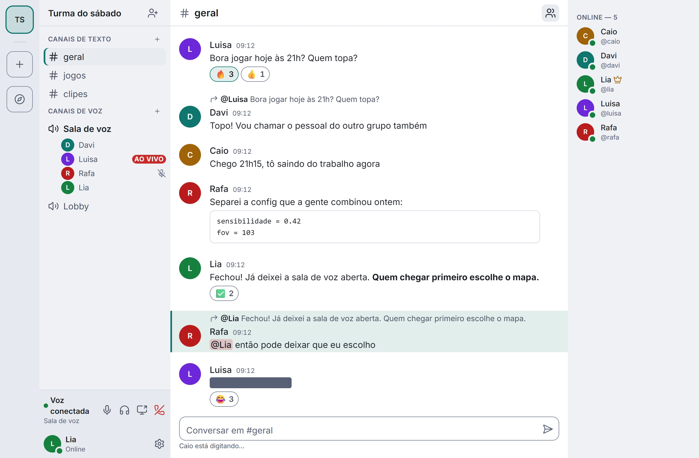
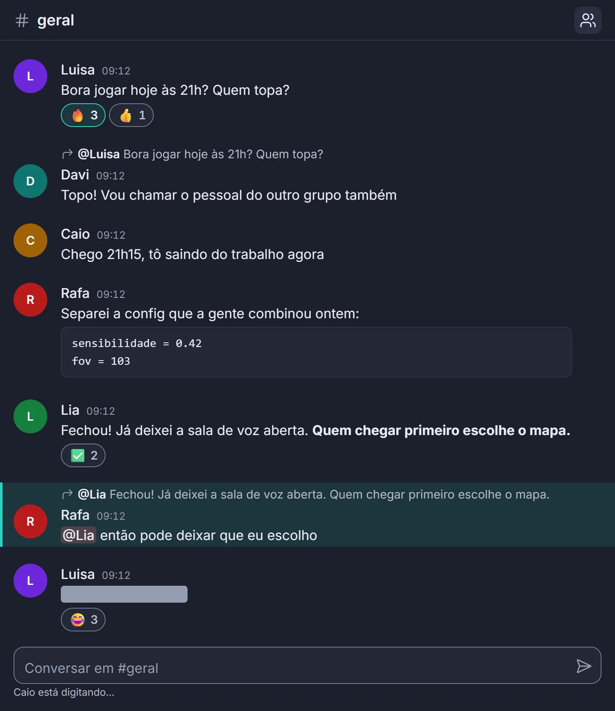
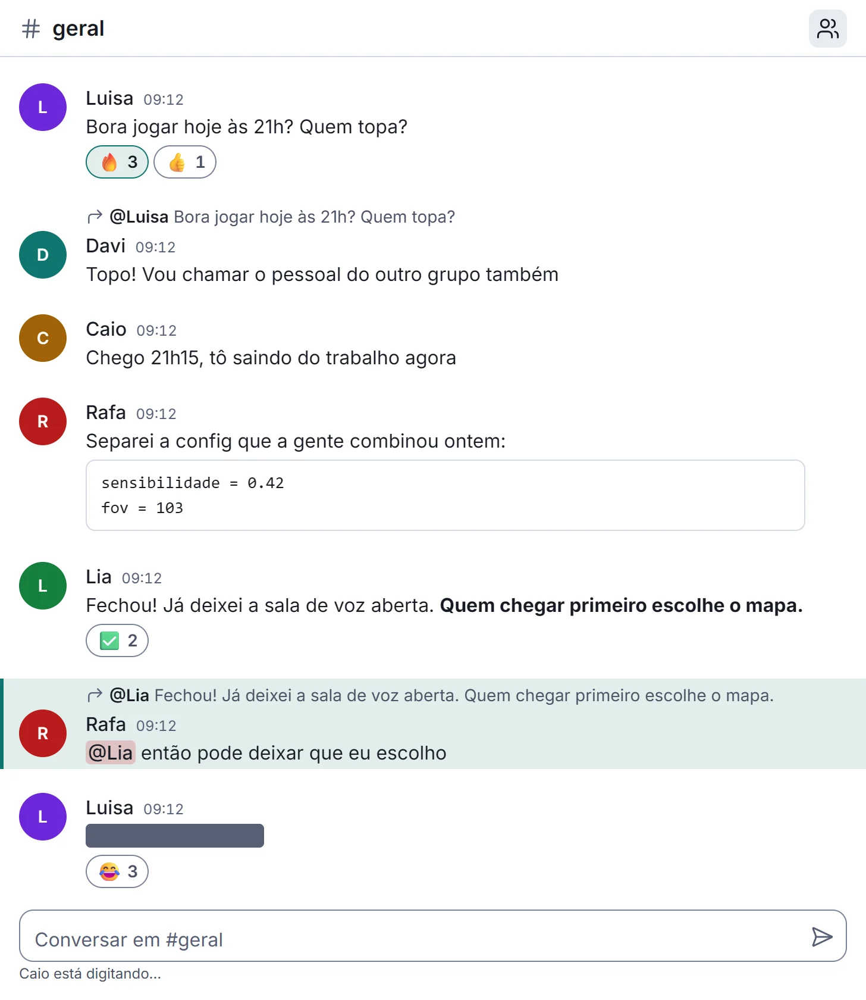
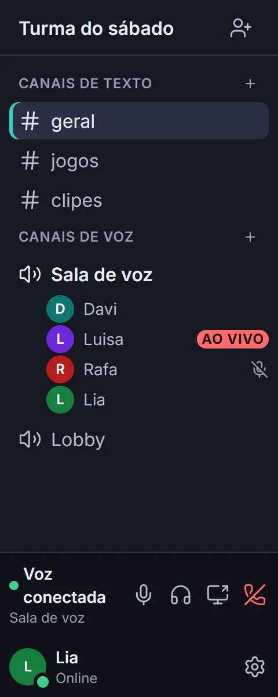
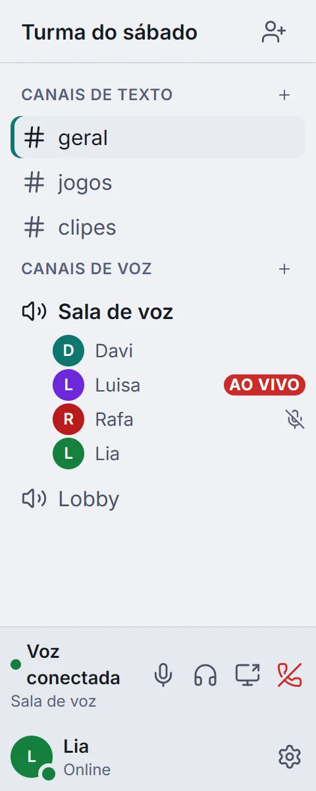
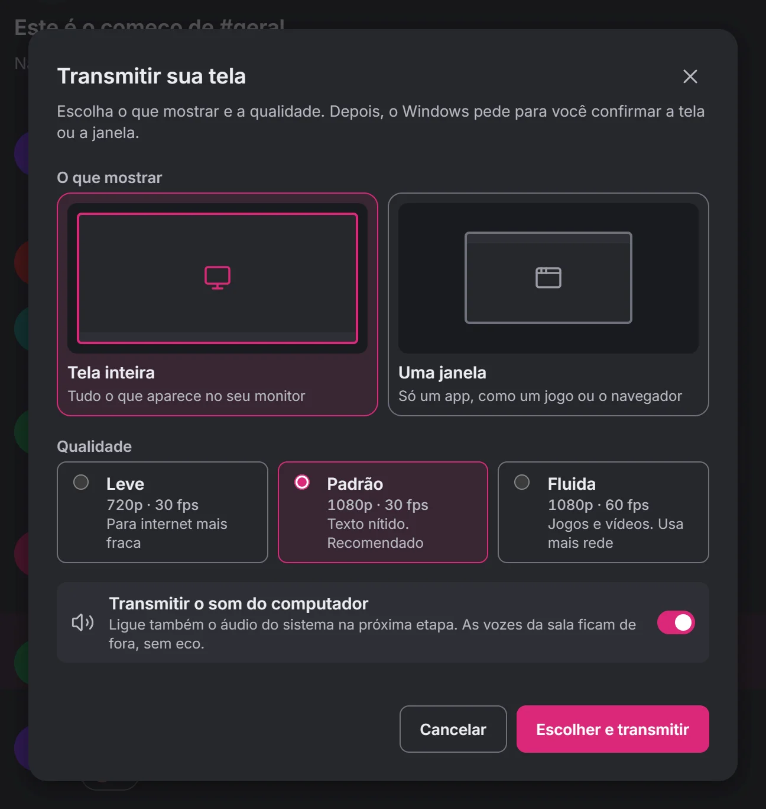
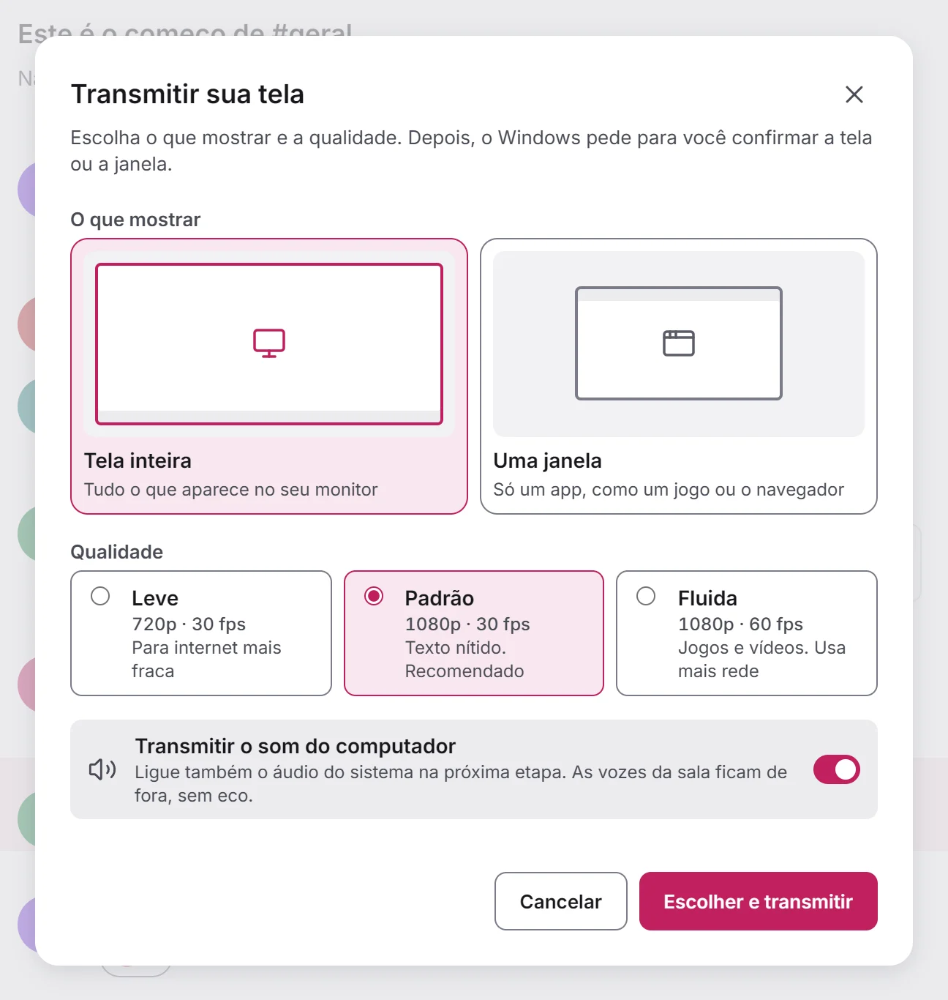
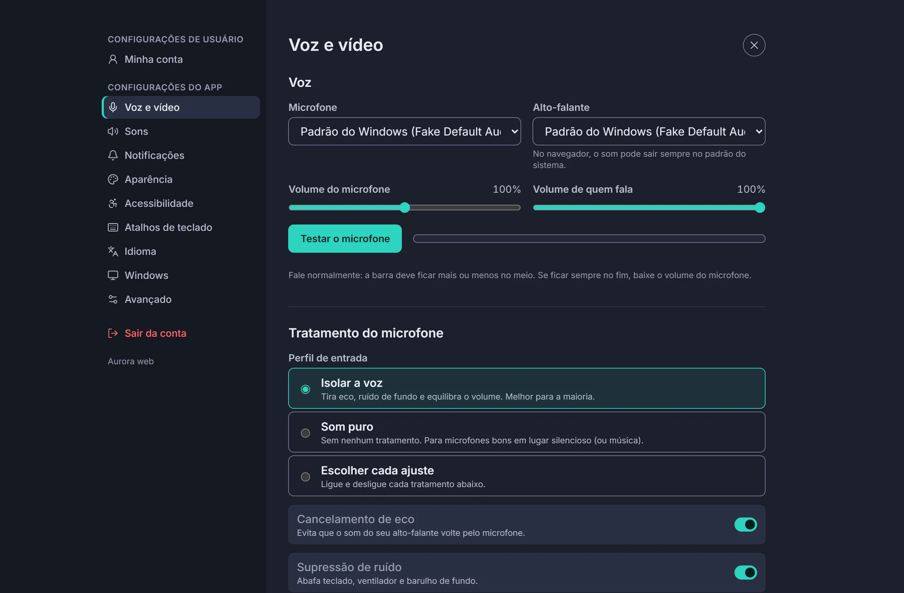
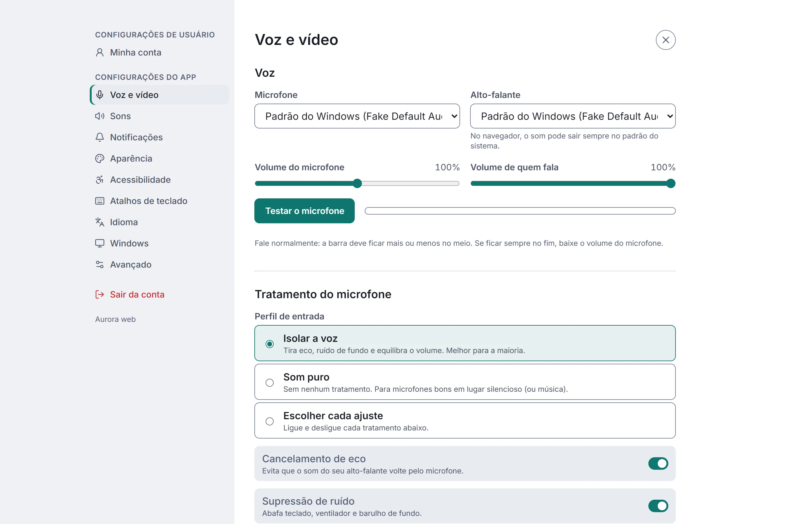

Para Windows 10 e 11
O lugar da sua turma.
Crie um servidor, chame os amigos com um código e converse por texto ou voz. Mostre a tela em até 1080p com o som do jogo junto, num app pequeno que se atualiza sozinho.
Por enquanto o Aurora existe só para Windows. Abra esta página no computador para baixar.



Texto
Conversas que não se perdem.
Responda citando a mensagem, reaja e marque alguém com @. O Aurora lembra o que você já leu, então dá para voltar depois e continuar de onde parou, no PC de casa ou no do trabalho.
- A resposta mostra o trecho original e leva até ele
- Quem é mencionado recebe um aviso do Windows
-
negrito,
código, citação e spoiler - Mostra quem está digitando, na hora


Voz
Um clique e você está na sala.
Veja quem está na voz, quem está mutado e quem está transmitindo. Sons curtos avisam quando alguém entra, sai ou muta, sem precisar olhar a tela.
- Funciona fora de casa sem abrir portas no roteador
- Cancelamento de eco e supressão de ruído
- Mute com Ctrl Shift M e ensurdeça com Ctrl Shift D


Tela
Mostre a tela, com o som junto.
Tela inteira ou só uma janela, em três qualidades, até 1080p a 60 quadros por segundo. O som do computador vai junto e as vozes da sala ficam de fora, então ninguém ouve eco.
- Leve
- 720p · 30 fps
- Padrão
- 1080p · 30 fps
- Fluida
- 1080p · 60 fps


Configurações
Do seu jeito, até o último detalhe.
Escolha microfone e fone, teste a voz antes de entrar, troque o tema, aumente o texto e deixe o Aurora na bandeja, abrindo junto com o Windows.


- Instalador
- poucos MBum só arquivo .exe
- Atualizações
- Automáticasconferidas por assinatura digital
- Sistema
- Windows 10 e 1164 bits
- Preço
- Grátissem anúncios
Instalar
Pronto em um minuto.
-
Baixe o instalador
Clique em Baixar para Windows. O arquivo se chama
Aurora_…_x64-setup.exe. -
Abra o arquivo
Se aparecer
O Windows protegeu o computador
, clique em Mais informações e depois em Executar assim mesmo. Em inglês, os botões são More info e Run anyway. -
Entre e chame a turma
Crie sua conta, abra um servidor e mande o código de convite para os amigos.
Perguntas
O que costumam perguntar.
Por que o Windows mostra um aviso na hora de instalar?
O aviso aparece em todo programa novo que ainda não tem certificado de assinatura de código, um selo pago que o Aurora ainda não tem. As atualizações não passam por esse aviso: cada versão nova é baixada pelo próprio app, que confere a assinatura digital antes de instalar.
Quanto custa?
Nada. Baixar, criar servidores, falar e transmitir a tela é grátis.
Funciona no Mac, no Linux ou no celular?
Ainda não. Por enquanto o Aurora existe só para Windows 10 e 11 de 64 bits.
Preciso abrir portas no roteador para a voz funcionar?
Não. Quando não dá para conectar direto, a voz e a tela passam por um retransmissor, sempre criptografadas, e você não precisa configurar nada.
Como as atualizações chegam?
Ao abrir, o Aurora procura uma versão nova e instala sozinho. Com o app aberto, ele verifica de novo a cada 15 minutos e mostra um botão de atualizar no topo. O app só aceita pacotes assinados pelo projeto.
E a minha senha?
A senha nunca é guardada como texto: o servidor guarda só um resumo dela, feito com scrypt. Em Configurações, Minha conta, você troca a senha, e os outros aparelhos conectados saem na hora.
Chame a turma.
Baixe, crie um servidor e mande o convite. O resto o Aurora resolve.
Baixar para Windows